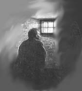

Quotes from the house of the dead
from
Memoirs From the House of the Dead
By Fyodor Dostoevsky

Human Nature
Man is a creature who can get used to anything, and I believe that is the very best way of defining him (Part I Ch 1). What does a prison mean to those convicts, assuming that they are, as the narrator says, capable of adjusting themselves to the prison life? Although they are technically "prisoners," it seems to be possible for them to accept their situations and live their lives not so much differed from the lives outside the prison. What does it mean by "prison" in this particular novel? The house of the dead?
It is very difficult to know a man thoroughly, even after long years (Part I Ch 3). The narrator describes all different kinds of characters in the prison with vivid and precise memory, yet he is doubting whether or not it is possible to understand a person. What's the degree of understanding of one's personality? What does it mean by "knowing a person"? Is it possible to know somebody as much as you know of yourself?
Some people say that the most exalted love for ones' neighbor is at the same time the greatest egotism. What egotism there could be here is more than I can understand (Part I Ch 6). Love your neighbors.... Following the narrator's conclusion, does the Scripture instruct us to love ourselves? What is "egotism" according to Dostoevsky's philosophy? Is the mankind merely a selfish creature who likes to be believed to pursue "active love" while its actual intention is to follow his or her greatest egotism? Is egotism really the same as "loving your neighbor"?
Longing to be his own self (Part 1 Ch 5). Madness is a reflection of our desire to be our own self. The narrator states, "a mournful desire for an abrupt display of personality." Do the human beings conceal their true nature by subsiding their desire to become themselves, or they are just waiting for a better opportunity to express themselves? What is the use of reaching to the point where we become utterly ourselves? Salvation? Peace of mind?
I was always astonished at the extraordinary good nature and lack of malice with which men who had been flogged spoke of their beatings and of those who had inflicted them (Part II Ch 2). Some people take the severe, corporal punishment without any degree of anger and offense. Think about their personality. What makes them forget about those people like the major, who inflicted insufferable punishment on them, and share their agonizing experience with so much resignation? What have the physical suffering and pain done to them? Can their personalities be ever changed?
...As though they were spending the night at a wayside inn, at the end of one stage of a long march (Part II Ch 7). Are we all wanderers? Our mind is always full of anticipation, hope, and dream of something new that is coming. Imagine yourself being a wanderer. What does that provide you? What is the ultimate goal of its journey? Think about Dostoevsky's life and how much the various journeys that he made during his lifetime had impacts on his works.
Crime & Justice
It seems that crime cannot be comprehended from a fixed point of view, its philosophy is rather more difficult than is supposed…..Prison and penal servitude do not, of course, reform the criminal; they only punish him and secure society against his further attempt on its space (Part I Ch 1). Define, in your own words, criminals. Determine whether the crimes, which you just defined, can be reformed by prison or any other social institutions and policy. Is criminal something that is already internalized into one's personality? Who are you? What is the narrator really saying to his reader in the sentence above?
There are certain crimes which, from the beginning of the world, under every code of law, have always and everywhere been regarded as indisputably crimes and will continue to be so regarded while men are men (Part 1 Ch 1). What kind of crimes is really regarded as indisputable crimes? It seems that there is a fixed idea in human justice system, which always rejects a certain situation or circumstance, which we call a "crime". There is an always invisible guideline about crime and punishment. Does the whole justice system merely reflect human minds? Or is it something absolute and definitive, which one must abide by no matter what?
...both the one and the other get the same penal servitude. ….Every different personality means a different crime (Part I Ch 3). Should the term "crime" be defined relatively, depending on different personality of different people? Is crime a mere extension of one's tentative aberrant personality, which is part of that person? Are we all criminals? Who are the real criminals? Read "Devils" and think about it.
One man who had not committed murder might be more terrible than another who had been sent to exile for six murders. It was crimes, there was so much that was strange in their execution (Part I Ch 8). What is it that distinguishes between good and evil? Do all men have potential to become murderers or to be even worse than that, if the quote above is true? Give an example of crime in which the case is much more terrible than that of multiple ax murders. How are you going to justify that particular crime?
Love & Sympathy
The little girl ran after me….'Here, poor man, take this copeck in Christ's name', she cried, running round in front of me and thrusting the copper into my hand….I kept that piece of money carefully for a long time (Part I Ch 1) Love and sympathy are frequently emphasized throughout the novel, while the story is evolved in the midst of those prisoners who have committed theft, murder, and many other vicious criminals. The quote above describes the moment when the little girl outside the prison approached to Alexander Petrovich and thrust coins into his hands. One is moved by the action of the little girl and of Petrovich's remarks afterward, not because of the money he received, but the love and sympathy that the little girl had brought to him. This random act of kindness reflects the biblical images of many saints and also the idea that "Love your neighbors like yourself."
You have done so much for me, so much ….even my father and mother would not have done so much; you have made me a man. God will reward you and I shall never forget you…..(Part I Ch 4). In the relationship with Aley, Petrovich shows a devotion and enthusiasm in helping Aley with his Russian and reading the Bible in Russian translation. With love and sympathy, a spiritual learning as well as an intellectual learning becomes possible. In Alley's words, one experiences a intense sense of respect and love. It is more surprising that this kind of a strong friendship and bonding are shaped even in the prison. Or should one claim that these are only possible in the place like a prison?
Here was the only creature now remaining in the whole world who loved me and was attached to me, my sole friend- my faithful dog Sharik (Part 1 Ch 6). …he suddenly squatted close to the ground, began to tremble all over, and whined loudly with emotion….. he would see me from a distance and give a plaintive and pitiable whine (Part II Ch 6). Sharik is the only living creature in the prison who provides mental and emotional support to Petrovich. What is the significance of this particular story? How does Dostoevsky treat animals with respect to human beings? Are they equal? Are they also capable to love something like us? It seems that, from the statement above, Sharik is the most reliable friend Petrovich has. Notice that Sharik appears in both Part I and Part II as the narrator develops the stories in the prison. What other living creature, besides men and dogs, are there in this novel? Think about their significance.
How can I lose you, Alexander Petrovich? Who will be left for me here when you've gone? (Part II Ch 10). Can one tell, from the quote alone, what kind of person Alexander Petrovich is? How much impact has he had on other people around him?
Isolation & Loneliness
They watched our suffering, which we tried not to show them, with delight. We were particularly severely cursed at work at first, because we were not as strong as they were and could not pull our weight. There is nothing harder than to gain the confidence of the people (Part I Ch 3). How is "they" and "we" are separated here? What is the criteria that divides into two different groups? Think about physical power and intellectual power. Which one is stronger in which kind of situation? Refer to another quote in Chapter 11 in Part I. There, people respect the intellectual strength of the narrator, and that shows that the intellectual wisdom is better fit in a certain situation.
How can you be our comrades? … I understood that I should never be received into their company, even though I was a prisoner, even if it were for ever and a day, even if I were in the Special Class? (Part II Ch 7) What makes him so different from the rest of the convicts in the prison? Is that just because he has a noble background? How does his presence create the "noble" aura among other people? Why does the narrator seem to feel lonely about this particular situation?
They recognized that in this matter I might be a better judge than they (Part I Ch 11). Is classification between men something that comes naturally to all of us? Does physical strength also contribute the overall classification? As shown earlier, the intellectual strength is often feeble and even useless in a circumstance where manual, physical power is needed. What about in this particular situation? How does people respect the narrator?
Irony of Life
What is the ranks higher than money for the convict? Freedom, or any rate some illusion of freedom. Prisoners are great dreamers (Part I Ch 5). Freedom of dreaming....Is that real? Dreaming for freedom, whether one is prisoner or not, is the underlying source of power that moves one forward. How is dreaming related with reality for prisoners? Are they just hopeless dreamers? Is the narrator being sarcastic by saying that "Prisoners are great dreamers." Think about Dostoevsky's real experience in prison during the early period of time.
A high and most characteristic trait of our common people is their feeling for justice and their thirst for it (Part I Ch 11). Is our desire for justice a manifestation of our egotism. Is justice (humanity) the consequence of our selfishness? Or are they two distinct, antiparrelle concepts? How does the narrator come to that point? What kind of observer is the narrator, seeing the fact that he broaches many other conclusions about psychological behaviors of people around him?
A man like the major must always have somebody to oppress, something to take away from somebody, somebody to deprive of his rights, in short, an opportunity to wreak havoc (Part 1 Ch 11). Is there any justification in the quote above? Is that a mere description of the major's personality as a matter of fact? It sounds that the major is destined to oppress people. Are we allowed to beat someone to death, if that action is part of becoming our own selves and part of our unavoidable personality? Would you call that kind of thought process evil?
Yes God was with us! Freedom, a new life, resurrection from the dead….. what a glorious moment? (Part II Ch 10) A long period of suffering and finally a short moment of relief and of happiness…… Compare this with the following quote: One brief hour to relax and enjoy themselves (Part I Ch 11). Dostoevsky often describes a brief moment of relief and peace in his literary works. Can experiencing the moment of happiness be the meaning of life? Think about the eastern religions and their philosophy. Is there any similarity between Dostoevsky's philosophy and eastern mysticism. What about their emphasis on the fact that the brief moment of happiness is inducive to peace of mind? Can sexual pleasure be justified this way? What does the narrator mean by "enjoying themselves"?
The skill of his hand, his knowledge of his art, the desire of to impress his fellow and the public, all stimulates his vanity. He takes pains for the sake of art (Part II Ch 3). Is there an artistic way of beating? In every action, there is a certain way to perform, which creates a sense of beauty at that moment. The beating itself misleadingly appears to be a piece of artistic performance here, but how should one justify that action of beating (flogging)?
Reality is infinitely diverse…. It resists classification……inward life… peculiar to us…. Not simply the official existence (Part II Ch 7). Are we all distinctly different from one another? What is diversity? Diversity in terms of races, personalities, or cultures? Should one allow classification to be pursued in one's society?
Links